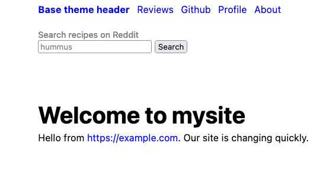

Editing parts of a theme
You'll always want to change the contents of a theme's header, nav bar, aside, and footer. You edit the theme directly to do this, and themes are designed to make it simple.
-
If you're reading this tutorial in sequence you're already in the root directory, but if not it's easy to find, so make sure you get to the root directory.
-
Load the theme's
README.mdfile from your project's by editing the file.poco/themes/mytheme/README.md. Obviously you will replacemysitewith whatever theme name you created.
It looks something like this:
File: README.md for a theme
---
stylesheets:
- ../../css/root.css
- ../../css/reset.css
- ../../css/sizes.css
- ../../css/layout.css
- ../../css/type.css
- ../../css/mediacolors.css
header: header.md
nav: nav.md
aside: aside.md
footer: footer.md
---
Description of theme...
For this section we're interested in the files next to
header:, nav:, aside:, and footer:. These are
where PocoCMS gets the contents of those layout elements
when it renders a page into HTML.
To edit them, just add them to the end of the
theme directory. If your theme is called mytheme
and you want to edit the header, you would load
.poco/themes/mytheme/header.md into your editor.
And we're going to do just that.
Editing the header
- Load the file
.poco/themes/mytheme/header.mdinto your text editor, replacingmythemewith whatever theme you wish to edit.
It may look something like this:
* **[base theme header](#)**
* [Reviews](#)
* [Github](#)
* [Profile](#)
* [About](#)
We will look at this mess later, but there's nothing wrong with simply replacing the name of your site and its URL in this part:
* **[base theme header](#)**
Suppose your company is called Example
and its URL is example.com. Here's what you'd do.
- Replace what's between the
[and]brackets withExample.
* **[Example](#)**
- Replace what's between then
(and)parentheses with your company's full URL:
* **[Example](https://example.com)**
Here's the result:
Replacing the nav
Let's replace the nav and give it the ability to search Reddit for recipes.
- Load the file
.poco/themes/mytheme/nav.mdinto your text editor, replacingmythemewith whatever theme you wish to edit.
The theme's README.md will have a line something like this:
nav: nav.md
In nav.md, or whatever file was used to create the nav,
you'll see the file used to generate the contents of the nav.
Themes have different asides but let's say it looks like this:
filename: nav.md
* [Base theme nav](#)
* [Subscribe](#)
* [Technical overview](#)
* [Free trial](#)
- Replace it with this (just copy and paste):
#### Search recipes on Reddit
<form action="https://www.google.com/search" class="searchform" method="get" name="searchform" target="_blank">
<input name="sitesearch" type="hidden" value="reddit.com/r/recipes">
<input autocomplete="on" name="q" placeholder="hummus" required="required" type="text">
<button class="button" type="submit">Search</button>
</form>
- Build your site and you'll see something like this (depends on the theme you chose, in this case, Base):

Editing other page layout elements
Use the principles you've learned on this page to edit your nav and footer